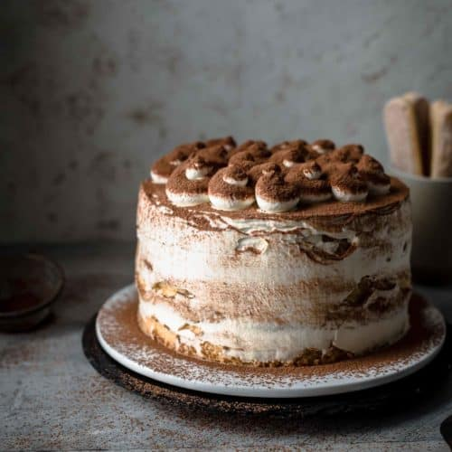

Make A Tiramisu Cake !

Description
This Tiramisu Cake is made of 5 ingredient genoise cake layers
brushed with espresso and filled with
irresistibly creamy coffee mascarpone cream.
No raw eggs in the frosting. Just 10 ingredients!
Ingredients
- 6 large eggs
- 1 cup all-purpose flour
- Unsweetened cocoa powder
- 4 cups full-fat mascarpone
Steps
Preheat oven to 350°F / 175°C.
Make the sponge fingers.
Make the mascarpone frosting
Pipe whipped cream on top if desired.
Chill and serve !